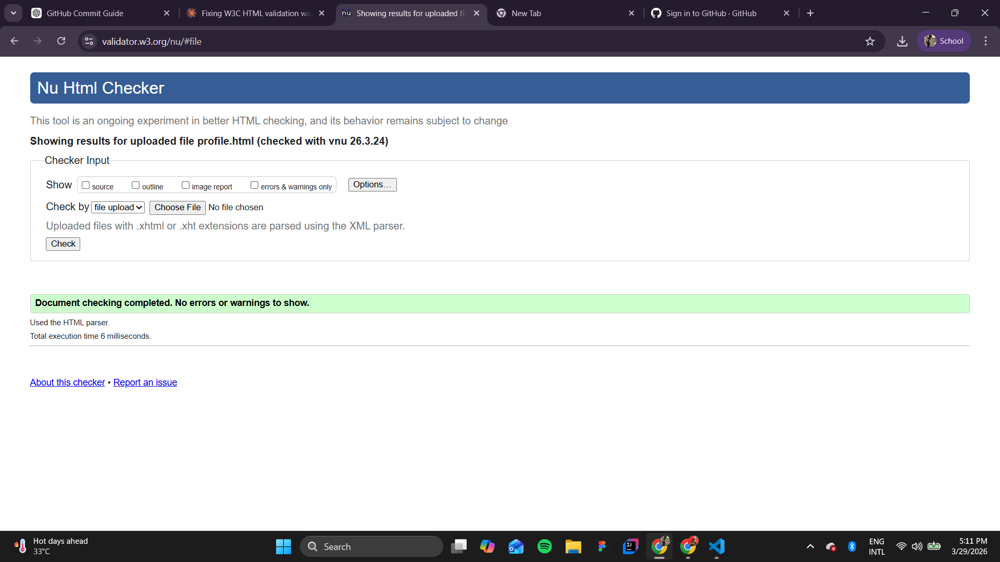
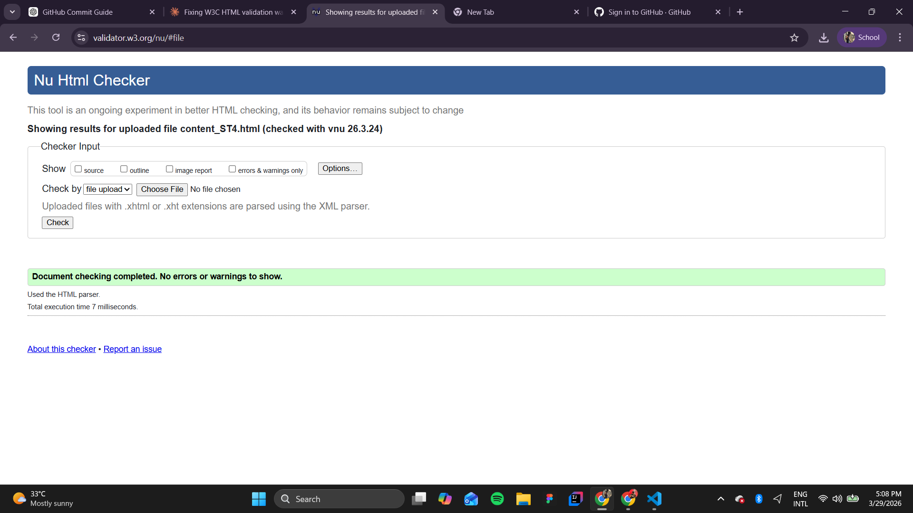

User Profile Page Validation Report
The User Profile page was validated with no errors. All JavaScript is correctly placed within a script element at the end of the body. The progress bar and profile output sections use valid HTML5 structure with div and table elements.

Back to Page Editor
Sitemap Page Validation Report
The Sitemap page with inline SVG passed validation with no errors. All SVG elements including rect, text, line, and anchor elements are valid. The viewBox attribute and responsive width settings comply with SVG and HTML5 specifications.
Back to Page Editor
Content Page Validation Report
The Content Page (Coral Reef Restoration) validated with no errors. All sections have proper heading hierarchy, images include alt text, and internal anchor links reference valid id attributes.

Back to Page Editor
Reflection on Validation
The SVG sitemap initially produced a validation warning about missing namespace declarations. Adding the correct xmlns attribute to the SVG element resolved this. I also had an error where an SVG <text> element contained an ampersand that was not escaped — changing it to & fixed the issue.
For the profile page, validation was straightforward since the page uses minimal HTML and relies primarily on JavaScript for dynamic content. This highlighted how pages with less static HTML tend to have fewer validation issues.
During validation, I encountered several warnings on the Profile page related to missing section headings. Multiple <section> elements did not include appropriate heading tags, which caused warnings about lacking identifiable structure. I resolved this by adding suitable heading elements (such as <h2> or <h3>) to each section, ensuring proper semantic organization and improving accessibility.
Additionally, in the Content page, there was a heading hierarchy error where an <h3> element followed an <h1> directly, skipping the <h2> level. This was corrected by adjusting the heading structure to follow a proper sequential order.
Through this validation process, I learned the importance of maintaining correct semantic HTML structure, especially using proper heading levels and ensuring that all sections are clearly defined. It also highlighted the need to validate pages continuously during development to catch structural issues early.